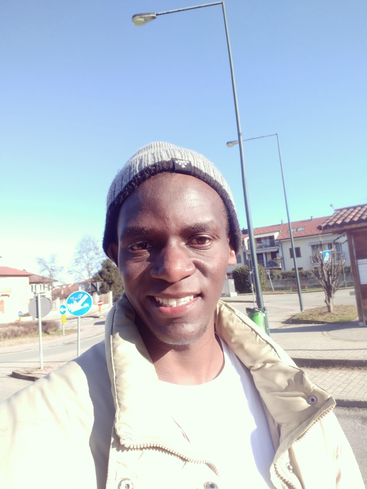
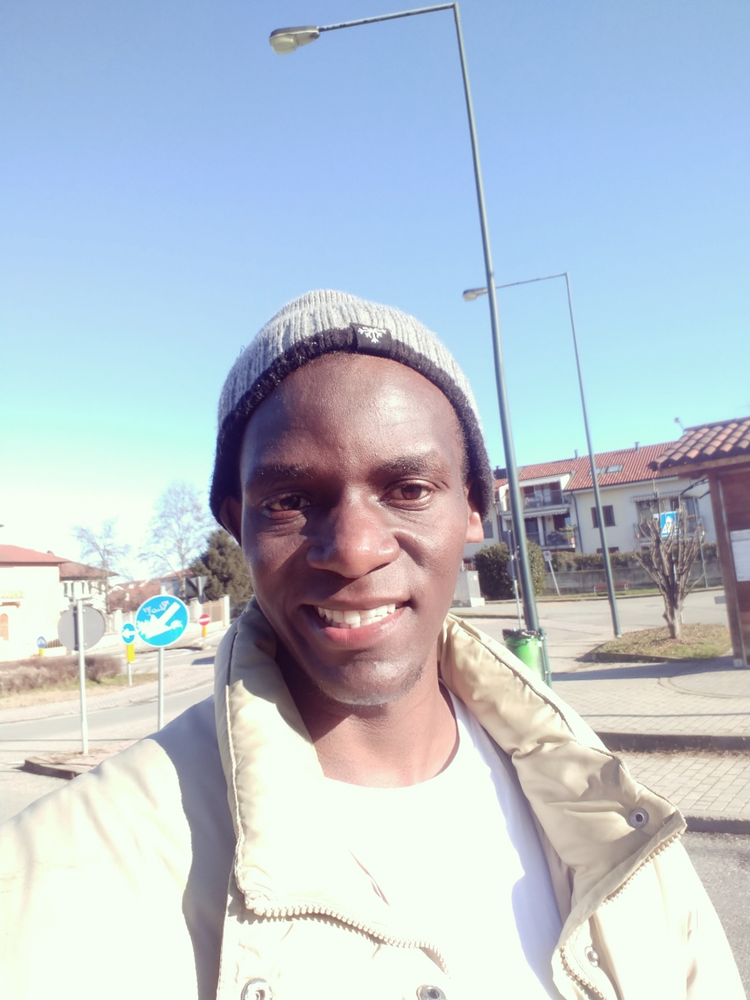

About me
I graduated with an International Air Transport Association (IATA) Diploma in Travel and Tourism , a Certificate in Sotware Travel using Amadeus and a Certificate in airport operations and Tour operations. Currently I just enrolled for an IT bootcamp with powercoders Italy and am learning different programming languages that will position me to suit the IT job market in Itlay.
My love for problem-solving has been one thing that has helped me move up in my career and also helped me stand out as the best employee of the year in my current job. The fact that I never had to give up on finding a solution to a challenge has been something that has helped improve my skills. I love the fact that I can handle different projects and deliver on time. I am now seeking an opportunity in a company that values the impact of modern technologies. A place that can help me leverage my skills to impact the organization.